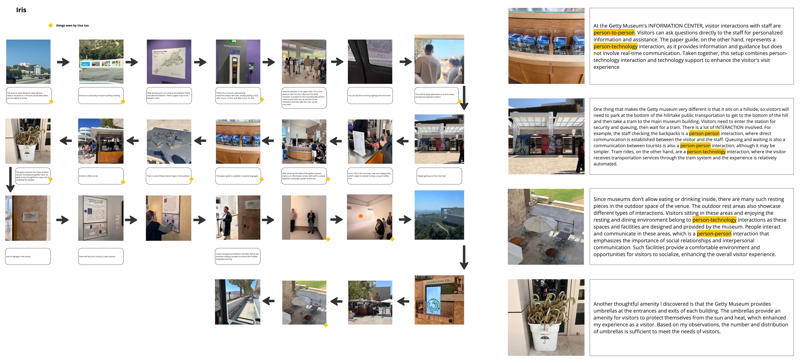
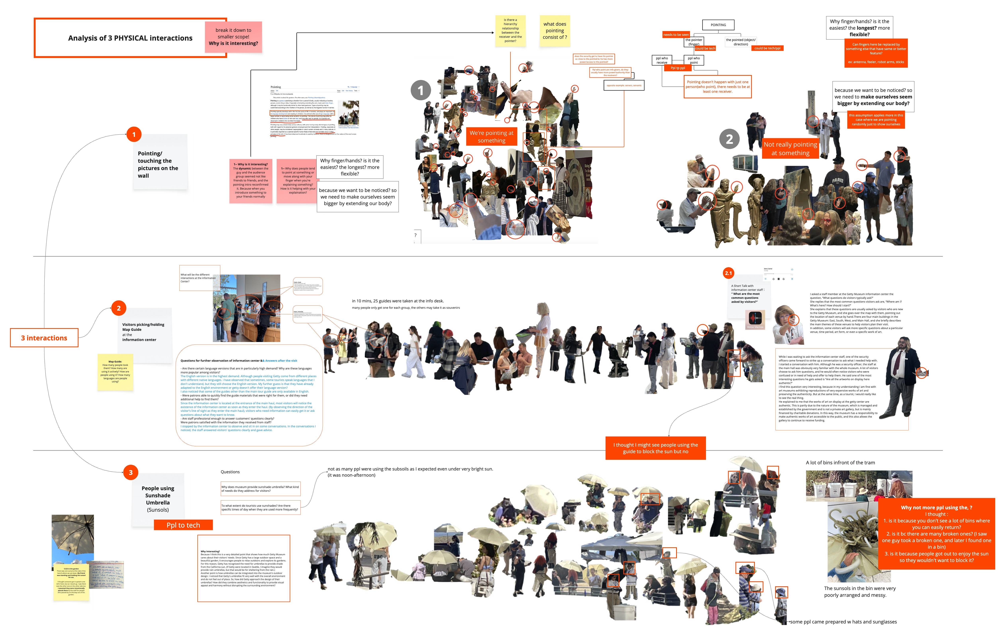
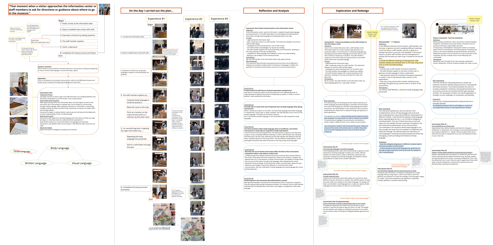
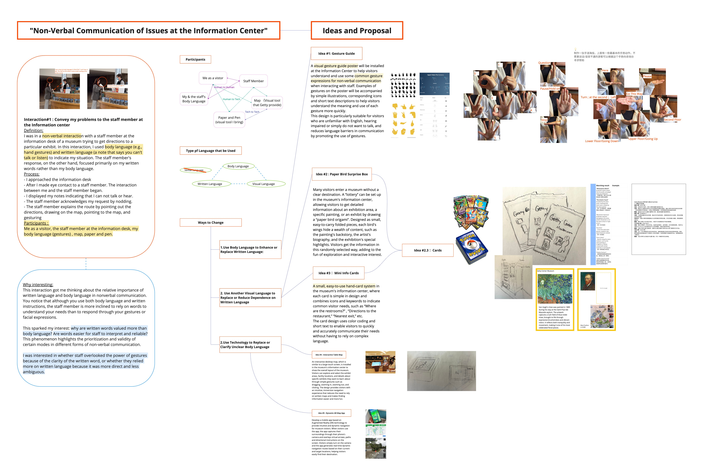
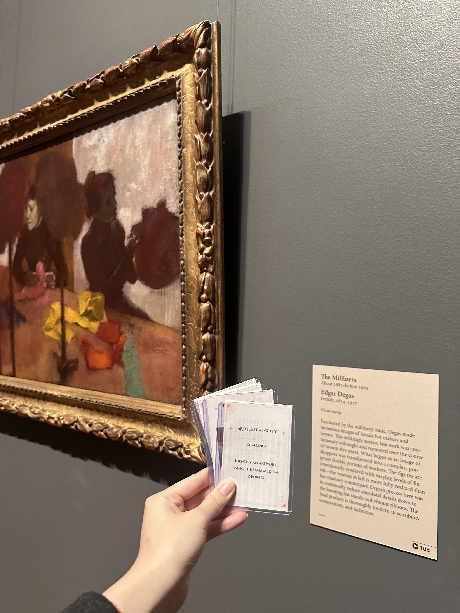
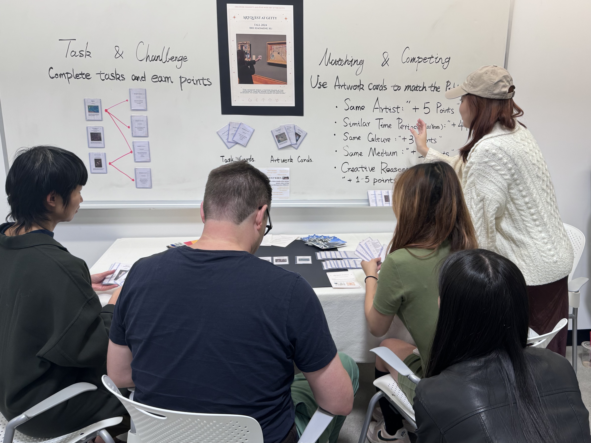

2024
ArtQuest at Getty
The journey of ArtQuest began with on-site observation. First, we each chose a location within the Getty Museum and explored it freely, noting what caught our attention. In the second visit, we selected three points of interest and dove deeper into observing their visual and contextual details. In the third visit, we focused on just one of these points and carried out experimental actions or interactions based on it.
Through this step-by-step investigation, we gradually discovered what intrigued us and what we wanted to design — leading to field tests and refinements.
This project eventually evolved into a game-based card system designed to enhance museum experiences.

Museum Exploration
First Visit: Open Observation

Second Visit: Three Physical Interactions

Third Visit: Deep-Dive and Redesign

Ideas and Proposal

Game Modes & Rules
The ArtQuest card system includes two main modes:
Task & Challenge
1. Task & Challenge: Players physically navigate the Getty Museum with task cards in hand. Each card presents a challenge — for example, finding an artwork that meets specific criteria. Successfully completing tasks earns points. This mode encourages deeper, more meaningful engagement with the museum's diverse collection.
Matching & Competing
2. Matching & Competing: In this multi-player mode, players do not need to be on-site. Each player draws a set of artwork cards and tries to match them with a set of public objective cards using logic, intuition, or narrative reasoning. Players score based on the creativity and relevance of their matches, encouraging open interpretation, discussion, and playful competition while learning about art.
Final Experience
In the Gallery

Presentation and Playtesting
